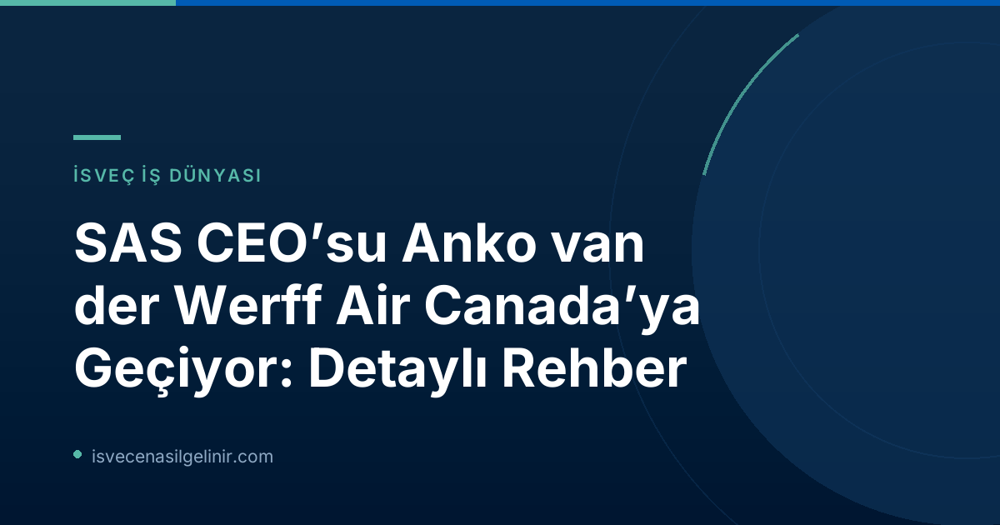

SAS CEO'su Anko van der Werff Air Canada'nın Başına Geçiyor
Duyuruya göre, SAS CEO'su Anko van der Werff, 2027 yılının başlarında mevcut görevinden ayrılacak ve Air Canada'da CEO olarak yeni görevine başlayacak. Bu geçiş, küresel havacılık sektöründe önemli bir liderlik değişimi olarak dikkat çekiyor. Anko van der Werff, SAS'taki görevine 2021 yılında başlamıştı ve şirketi zorlu bir dönüşüm sürecinden başarıyla geçirdi.
Önemli Bilgiler ve Tarihler
| Görev | Şirket | Tarihler |
|---|---|---|
| Mevcut CEO | SAS | 2021 - 2027 Başları |
| Yeni CEO | Air Canada | 2027 Başları itibarıyla |
| SAS'ın Kontrolü | Air France-KLM | Mevcut |
Anko van der Werff'in SAS'taki Dönüşüm Liderliği
Anko van der Werff'in 2021'de göreve gelmesinden bu yana SAS, önemli bir yeniden yapılanma ve dönüşüm sürecinden geçti. Bu süreçte şirketin finansal yapısının güçlendirilmesi ve operasyonel verimliliğinin artırılması hedeflendi. Özellikle pandemi sonrası dönemde havayolu sektörünün karşılaştığı zorluklara rağmen, van der Werff yönetiminde SAS'ın stratejik adımlar attığı biliniyor. Bu gelişmelerin ışığında, İsveç'te yaşam ve çalışma koşulları hakkında daha detaylı bilgi için İsveç Vatandaşlık Testi sayfamızı ziyaret edebilirsiniz.
SAS'ın Geleceği ve Sektörel Yorumlar
Anko van der Werff'in ayrılığına rağmen, SAS'ın gelecekteki stratejileri merak konusu olmaya devam ediyor. Şirketin Air France-KLM tarafından kontrol ediliyor olması, gelecek dönemde atılacak adımlarda bu ortaklığın etkili olacağını gösteriyor. Geçtiğimiz dönemde SAS ile ilgili çıkan bazı haberler, şirketin sektördeki konumunu ve zorluklarını da gözler önüne seriyor. Örneğin, 2026 Mayıs ayında çıkan haberlerde, petrol kıtlığına rağmen SAS'ın yaz uçuş krizini reddettiği ve CEO'nun devlet destekli kurtarma paketlerine ihtiyaç duymadığı belirtilmişti. Bu durumlar, SAS'ın kendi imkanlarıyla ayakta kalma ve büyüme stratejisini benimsediğini göstermektedir.
İsveç Havacılık Sektöründe Liderlik Değişimlerinin Etkileri
Böylesine üst düzey bir yöneticinin küresel bir markaya geçişi, İsveç havacılık sektöründe ve genel iş dünyasında çeşitli etkiler yaratabilir. Yeni bir CEO'nun atanmasıyla birlikte SAS'ın yeni bir vizyon ve strateji ile yoluna devam etmesi bekleniyor. Bu tür liderlik değişiklikleri, şirketlerin büyüme dinamiklerini ve pazar konumlarını önemli ölçüde etkileyebilir.
Referanslar
İsveç'e Göçmenlik ve Vatandaşlık Süreçleri Hakkında Merak Ettikleriniz mi Var?
İsveç'te yaşamak, çalışmak veya vatandaşlık almak için gerekli adımları öğrenmek ister misiniz? Uzman rehberlerimiz ve güncel bilgilerimizle süreçleri kolayca anlayın.